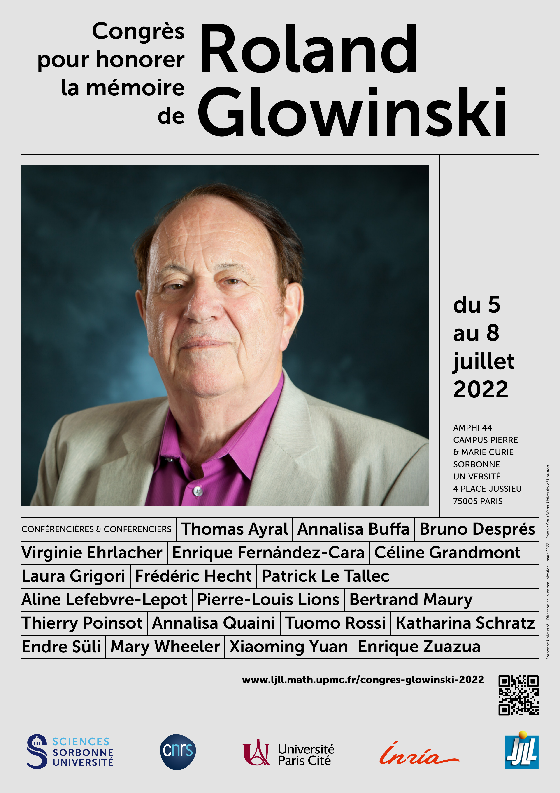
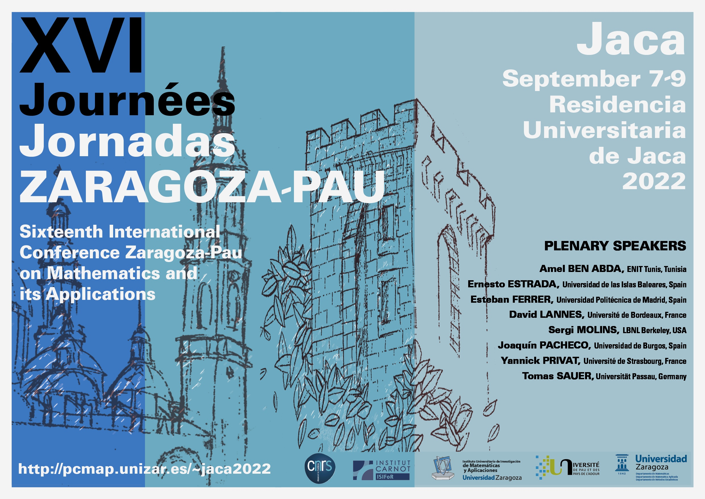

Bellaterra (Barcelona), Spain, June 20-23, 2022
https://www.crm.cat/hypatia-school-2022/
The Hypatia Graduate Summer School is an advanced school in mathematics addressed at young researchers and organized by the Barcelona Graduate School of Mathematics (BGSMath), the Training Unit of the Centre de Recerca Matemàtica (CRM).
This summer school series aims at training their participants in key strategic problems in
mathematics and their applications, with the core idea that theory and applications strengthen
each other. The school is focused in training of young researchers whilst opening new fields for
senior ones.
In this first edition, the Advanced School will be about Partial Differential Equations (PDEs), more specifically, the Free Boundary Problems. The topics covered in three mini-courses will be:
The Calderón Inverse Problem.
Free Boundary Problems in Fluid Mechanics.
Regularity of Free Boundaries in the Stefan Problem.
The activities in the school will also include a colloquium, a round table and a movie
projection.
The Hypatia Graduate Summer School will be developed in an informal atmosphere based on discussions, exchange of ideas and critical analysis of results. Moreover, to honour its namesake, it is committed to work under a friendly gender perspective that highlights the role of women in mathematics and encourages and helps the participation and promotion of young female researchers at a professional level.
María Ángeles García−Ferrero, Juan de la Cierva Postdoctoral Fellow - Basque Center For Applied Mathematics.
Javier Gómez Serrano, Universitat de Barcelona - Brown University − CRM.
Xavier Ros Oton, ICREA - Universitat de Barcelona - CRM.
Las Becas Leonardo a Investigadores y Creadores Culturales Fundación BBVA están destinadas a apoyar el desarrollo de proyectos personales de investigadores y creadores culturales en estadios intermedios de su carrera, de entre 30 y 45 años y con una producción científica, tecnológica o cultural altamente innovadora. Los proyectos tendrán una duración mínima de 12 meses y máxima de 18 meses. Se concederán al menos 55 becas para el conjunto de la convocatoria, dotada cada una de ellas con un importe bruto máximo de 40.000 euros, en las siguientes áreas:
Ciencias Básica (Física, Química).
Matemáticas.
Biología y Biomedicina.
Ciencias del Medio Ambiente y de la Tierra.
Ingenierías y Tecnologías de la Información.
Economía, Ciencias Sociales y Jurídicas.
Humanidades.
Música y Ópera.
Creación Literaria y Artes Escénicas.
Fecha límite de recepción de solicitudes: 28 de junio de 2022, a las 18h00’ (hora peninsular española). Bases de la convocatoria y formulario de solicitud disponibles en la web de la Fundación BBVA.
Más información y consultas en becas-leonardo@fbbva.es.
Los DMD 2022 se celebrarán en Santander, del 4 al 6 de julio de 2022, organizados por la Universidad de Cantabria. Son la continuación de las ediciones de 2016 (Sevilla) y 2018 (Barcelona). La edición de 2020 fue cancelada debido a la pandemia de covid-19, pero la de 2022 se celebrará, esperamos, en formato presencial.
El programa consta de cuatro conferencias invitadas, charlas cortas propuestas por los participantes, y una sesión de pósteres. Los conferenciantes plenarios son Marthe Bonamy, (Burdeos); Janos Pach, (Lausana y Budapest); Guillem Perarnau, (Barcelona); y Pascal Schweitzer, (Darmstadt).
Más información en https://dmd2022.unican.es.
Roland Glowinski passed away on January 26th, 2022. Roland was a great mathematician, a friend, and an important member of the Laboratoire Jacques-Louis Lions.
The Laboratoire Jacques-Louis Lions, in collaboration with INRIA, is organizing an international scientific conference to honor his memory.
This conference will take place from Tuesday, July 5th, 2022 at 2 pm to Friday, July 8th, 2022 at noon, Amphi 44, Campus Pierre et Marie Curie, Sorbonne Université, place Jussieu, Paris 5ème. The presentations will be given in person and will also be broadcast by Zoom in real time.
The website will allow one to register. Registration will be free but mandatory.
Thomas Ayral (Atos Quantum Lab, Les Clayes-sous-Bois, France).
Annalisa Buffa (Ecole Polytechnique Fédérale de Lausanne, Switzerland).
Bruno Després (Sorbonne Université, Paris, France).
Virginie Ehrlacher (Ecole Nationale des Ponts et Chaussées, Marne la Vallée, & INRIA de Paris, France).
Enrique Fernández-Cara (Universidad de Sevilla, Spain).
Céline Grandmont (Sorbonne Université & INRIA de Paris, France).
Laura Grigori (Sorbonne Université & INRIA de Paris, France).
Frédéric Hecht (Sorbonne Université & INRIA de Paris, France).
Patrick Le Tallec (Ecole Polytechnique, Palaiseau, France).
Aline Lefebvre-Lepot (Ecole Polytechnique, Palaiseau, France).
Pierre-Louis Lions (Collège de France, Paris, France).
Bertrand Maury (Université Paris-Saclay, Orsay, France).
Thierry Poinsot (Université Toulouse III Paul Sabatier & Cerfacs, Toulouse, France).
Annalisa Quaini (University of Houston, USA).
Tuomo Rossi (Jyväskylän yliopisto, Finland).
Katharina Schratz (Sorbonne Université, Paris, France).
Endre Süli (University of Oxford, UK).
Mary Wheeler (The University of Texas at Austin, USA).
Xiaoming Yuan (The University of Hong Kong, China).
Enrique Zuazua (Friedrich-Alexander Universität, Erlangen, Germany).

We organize the conference Mathematical Fluid Mechanics in 2022, which will be held on August 22 – 26, 2022, in Prague, Czech Republic (see also the webpage https://mfm-in.com/)
The already accepted invited speakers are
Giovanni Paolo Galdi – University of Pittsburgh, USA
Reinhard Farwig – TU Darmstadt, Germany
Adelia Sequeira – IST Lisbon, Portugal
Yoshihiro Shibata – Waseda University, Japan
Werner Varnhorn – Kassel University, Germany
Suncica Canic (online) – Berkley University, USA
Irena Lasiecka – University of Memphis, USA
Roberto Triggiani – University of Memphis, USA
Maria Neuss-Radu – University of Erlangen-Nürnberg, Germany
Willi Jäger – University of Heidelberg, Germany
Eduard Feireisl – Institute of Mathematics, CAS, Czech Republic
Jiri Neustupa – Institute of Mathematics, CAS, Czech Republic
Jiri Furst - Czech Technical University in Prague, Czech Republic
Milan Pokorný – Charles University in Prague, Czech Republic
Minsunk Yang – Yonsei University, Korea
Michal Beneš – Czech Technical University in Prague, Czech Republic
Pavel Krejčí – Institute of Mathematics, CAS, Czech Republic
Chérif Amrouche – Université de Pau et des Pays de l’Adour, France
Bumja Jin – Mokpo National University, Korea
Raphaèle Herbin (online) – Aix-Marseille University, France
Young-Sam Kwon - University of Busan, Korea
Philippe Fraunie- University of Toulon, France
Adelia Sequeira – IST Lisbon, Portugal
Irena Lasiecka – University of Memphis, USA
Ana Leonor Silvestre - IST Lisbon, Portugal
Aneta Wroblewska-Kaminska - Institute of Mathematics, Academy of Sciences of the Poland,
Young-Sam Kwon - University of Busan, Korea
Joerg Wolf - Chung-Ang University, Korea
If you would like to participate in the conference, and you are not yet registered, please register through our webpage https://mfm-in.com/registration/
Please note that a limited budget is available to support young scientists (up to 35 years of age) to cover part of expenses related to their attendance at the conference. Feel free to share this information with your colleagues and PhD students.
With best regards,
T. Bodnár, G. P. Galdi and Š. Nečasová
_____________________________________ ◇◇◇_____________________
El Curso y encuentro de Análisis Numérico «Zaragoza Numérica» fue creado por Francisco Javier Sayas en 2003 con un sello muy personal. Bajo este epígrafe se reunían dos actividades de distinto carácter (curso y encuentro), con el común denominador de fomentar la actividad investigadora en torno al análisis numérico de problemas gobernados por ecuaciones en derivadas parciales, tanto en sus aspectos más teóricos como prácticos. El objetivo principal era crear un foro de discusión y difusión de nuevas ideas matemáticas y técnicas computacionales en el ámbito del análisis numérico destinado a especialistas ya formados o en formación, en un ambiente distendido, donde hubiese tiempo para explicar con detenimiento los temas y plantear cuestiones.
Javier organizó las ediciones de 2003, 2005 y 2007 en Zaragoza, y su traslado a EE.UU. no impidió que dicho workshop, uno de sus proyectos más queridos, siguiera su andadura por diferentes ciudades gracias al esfuerzo y gran empeño de muchos compañeros. Las siguientes ediciones tuvieron lugar en Sevilla (2009 y 2011), Cádiz (2013), Ciudad Real (2015) y Valencia (2017). Javier siguió participando de forma muy activa en todas las ediciones, ayudando a mantener el espíritu inicial del evento, y siempre deseó que el encuentro volviese a su ciudad de origen, Zaragoza. Este es el objetivo de esta edición, que se plantea como un tributo a Javier por parte de los compañeros que contribuyeron a la organización del encuentro en alguna de sus ediciones y de sus estudiantes y colegas más cercanos. En este caso, no se impartirán cursos, sino que la reunión consistirá en una serie de ponencias invitadas con las que rendir un sentido homenaje al organizador principal y alma mater de «los Numéricas» .
La dirección de correo del evento para cualquier consulta es
numericazgz2022@unizar.es.
Francisco Gaspar (fjgaspar@unizar.es) y Carmen Rodrigo (carmenr@unizar.es).
_____________________________________ ◇◇◇_____________________
Del 7 al 9 de septiembre de 2022 se celebrará en la residencia universitaria de Jaca la conferencia bienal «Sixteenth International Conference Zaragoza-Pau on Mathematics and its Applications» que organiza la Universidad de Zaragoza y la Université de Pau et des Pays de L’Adour. El objetivo de esta conferencia es el de reunir a investigadores cuyas inquietudes residen en la aplicación de las matemáticas al estudio de problemas provenientes de diversas disciplinas científicas. Se puede participar en el congreso organizando mini-simposios, presentando comunicaciones orales o pósteres.
Amel Ben Abda (ENIT Tunis, Tunisia).
Ernesto Estrada (Instituto de Física Interdisciplinar y Sistemas Complejos, CSIC, Universidad de las Islas Baleares, Spain).
Esteban Ferrer (Universidad Politécnica de Madrid, Spain).
David Lannes (Université de Bordeaux, France).
Sergi Molins (LBNL Berkeley, USA).
Joaquín Pacheco (Universidad de Burgos, Spain).
Yannick Privat (Université de Strasbourg, France).
Tomas Sauer (Universität Passau, Germany).
Propuesta de mini-simposios: hasta el 22 de abril de 2022.
Solicitud de becas: Hasta el 10 de junio de 2022.
Sumisión de resúmenes: hasta el 1 de julio de 2022.
Inscripción con tarifa reducida: hasta el 11 de julio de 2022.
Chérif Amrouche, Gilles Carbou, Fabien Caubet, José Luis Gracia, María Cruz López de Silanes y Manuel Palacios.

_____________________________________ ◇◇◇_____________________
Springer anuncia una serie de webinars y entrevistas gratuitas llevadas a cabo por los miembros del panel de UNITEXT y que irán rotando para entrevistar a los mejores expertos en sus campos.
En la primera sesión, que se transmitió en directo el 9 de junio, Alfio Quarteroni entrevistó a Luigi Ambrosio. Los oradores trataron el tema del transporte óptimo y discutieron los problemas abiertos más desafiantes y los desarrollos futuros en este campo.
Más información aquí.
_____________________________________ ◇◇◇_____________________

Lambert: lógica y matemáticas en el siglo XVIII, 28 de febrero de 2022.
¿P = NP?, o la utilidad de los matemáticos en juego, 11 de marzo de 2022.
Un país donde quien habla es colgado (por L. Euler), 17 de marzo de 2022.
Sophie Germain y los matemáticos de Ucrania, 23 de marzo de 2022.
Ranas, Frankestein y Electrocardiogramas, 3 de mayo de 2022.
De mi violín consigo el mayor regocijo en la vida (por A. Einstein), 9 de mayo de 2022.
El problema de la factorización y los factoriales, 20 de mayo de 2022.
La belleza profunda de la naturaleza (por R. Feynman), 23 de mayo de 2022.
Solución: Alumnos de Matemática Discreta, 25 de mayo de 2022.
Dirac y la mecánica cuántica relativista, 31 de mayo de 2022.
Estaciones meteorológicas extrasolares, 10 de junio de 2022.
_____________________________________ ◇◇◇_____________________